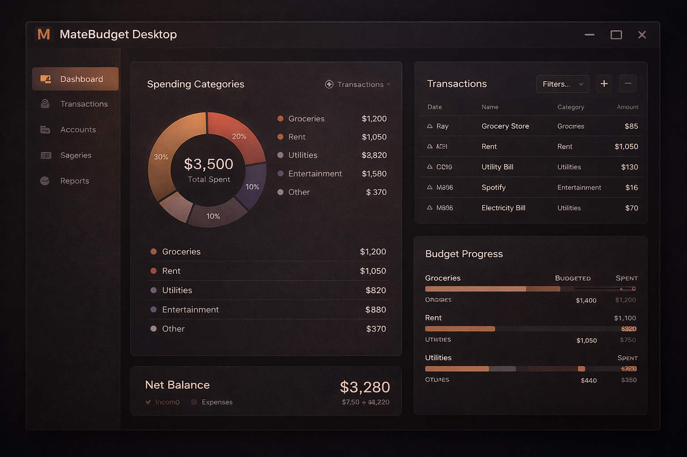
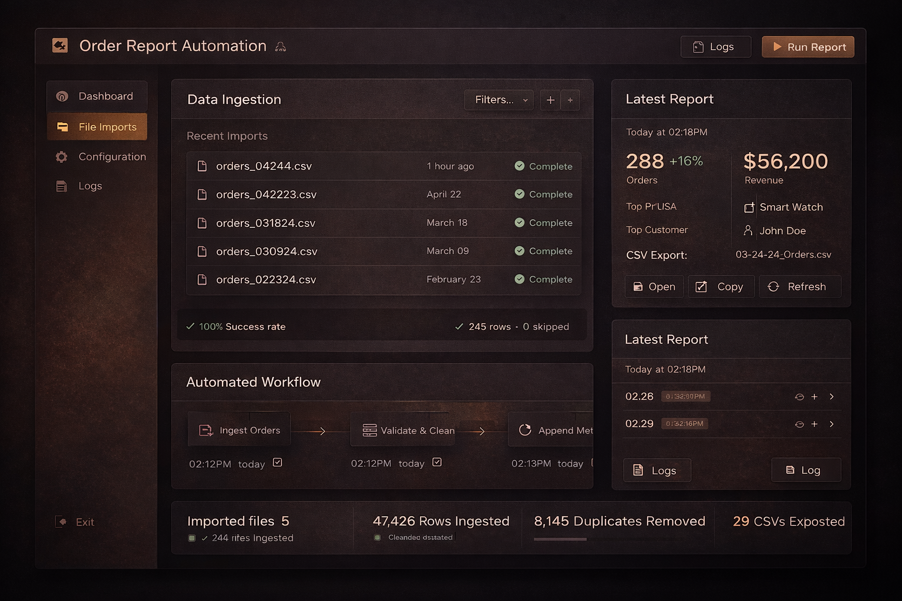
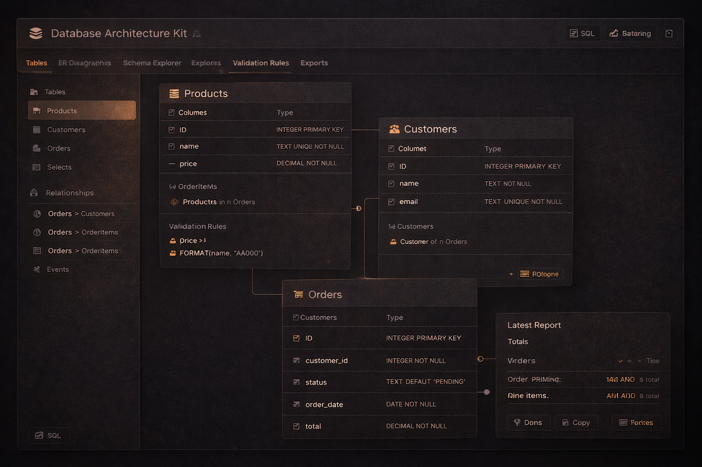
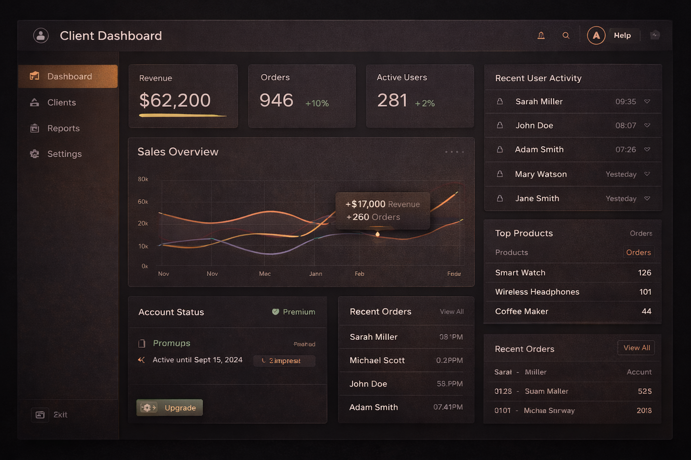
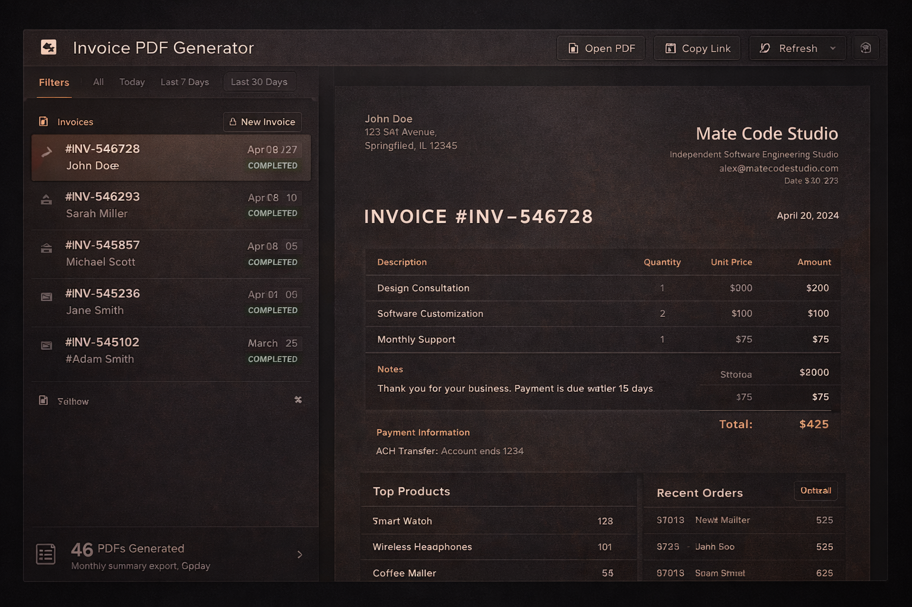
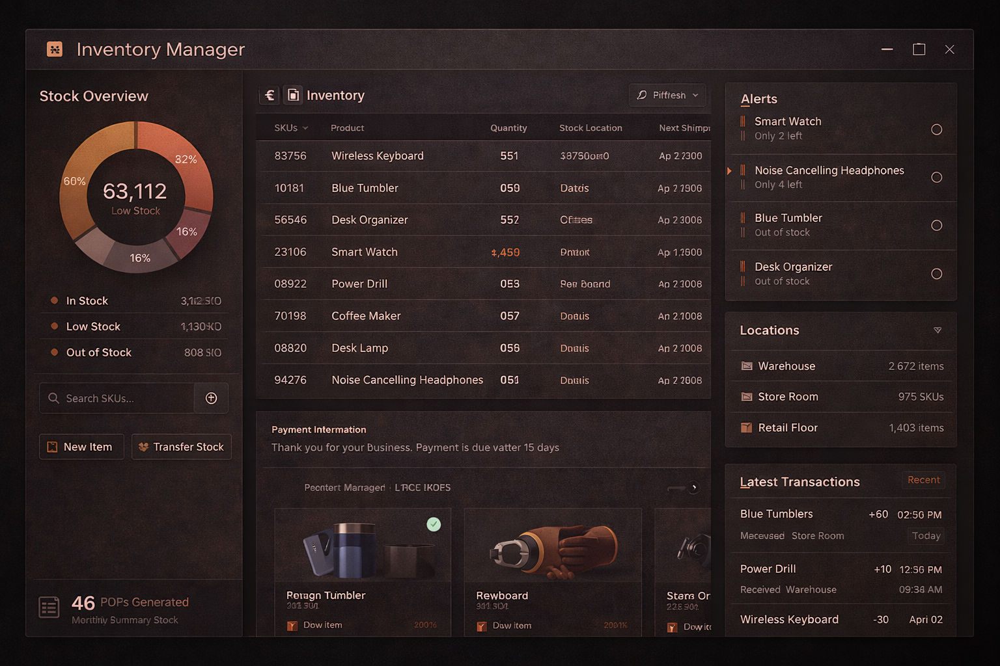
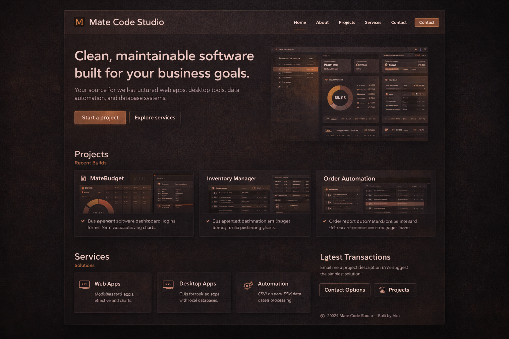
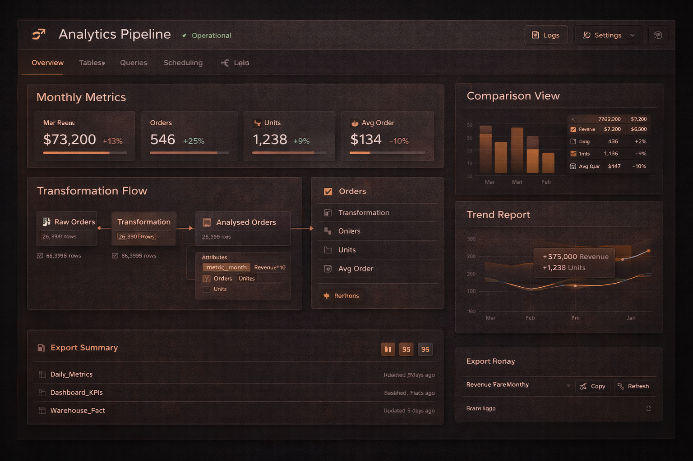
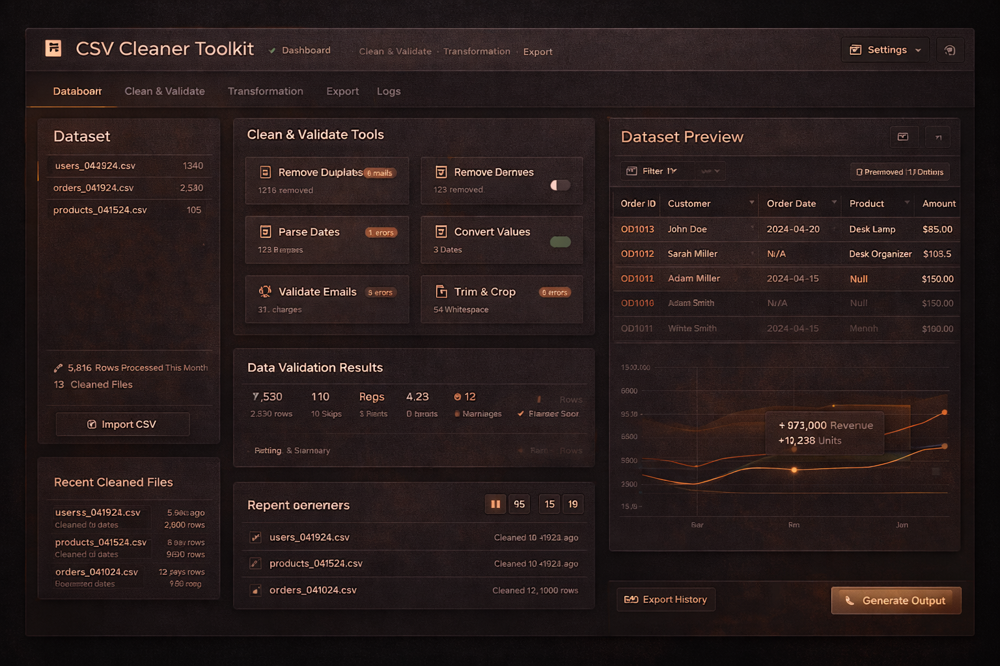

MateBudget — Budgeting App
WebPersonal budgeting platform with transaction tracking, categories, analytics, exports, and a clean workflow.
PythonFlaskSQLiteCharts
Projects
A selection of projects across web apps, desktop tools, automation, and data-focused builds. Everything is structured for clarity, scalability, and long-term reliability.
Portfolio
Filter by project type. Each project includes a short summary and the core stack used.

Personal budgeting platform with transaction tracking, categories, analytics, exports, and a clean workflow.
Desktop version concept with native navigation, local database storage, and a modern UI feel.

Automated report generation: ingestion, cleaning, and exporting summaries to reduce manual admin time.

Reusable schema patterns for products, orders, customers, and analytics-ready reporting tables.

A clean dashboard template with authentication, KPI overview, and modular page structure.

Automatic invoice creation from structured data with consistent templates and export-ready PDFs.

Desktop inventory concept: SKU search, stock alerts, locations, and clean workflow screens.

Premium editorial website system: brand palette, typography, structured pages, and responsive navigation.

Data pipeline structure for monthly metrics: revenue, orders, units, trends, and comparison views.

A toolkit that normalises messy CSVs, fixes types, merges files, and produces consistent outputs.
Send a short message with your goal and timeline — I’ll reply with next steps and a clear plan.
Contact Options